Generative Art
Learning p5.brush
Grokking the fundamentals of vector fields, brushes, palette, hatching, and fill in order to make art programmatically.
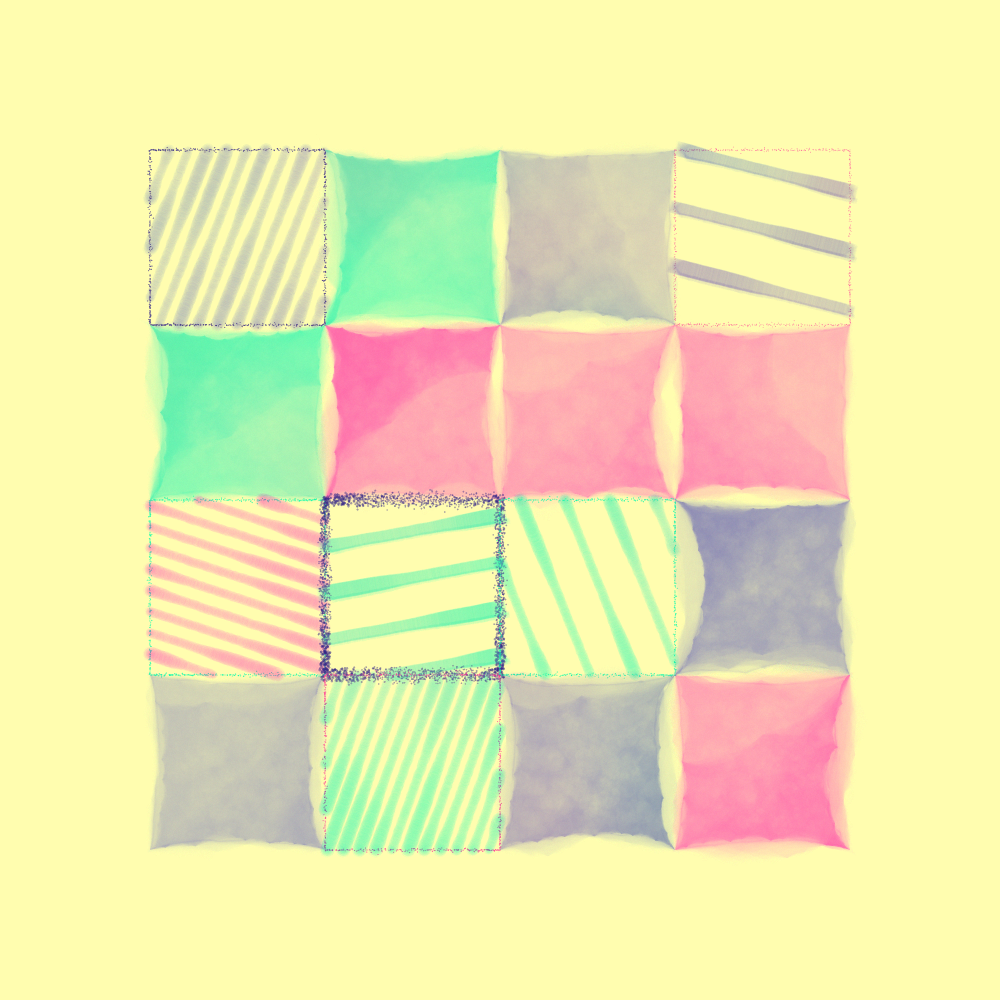
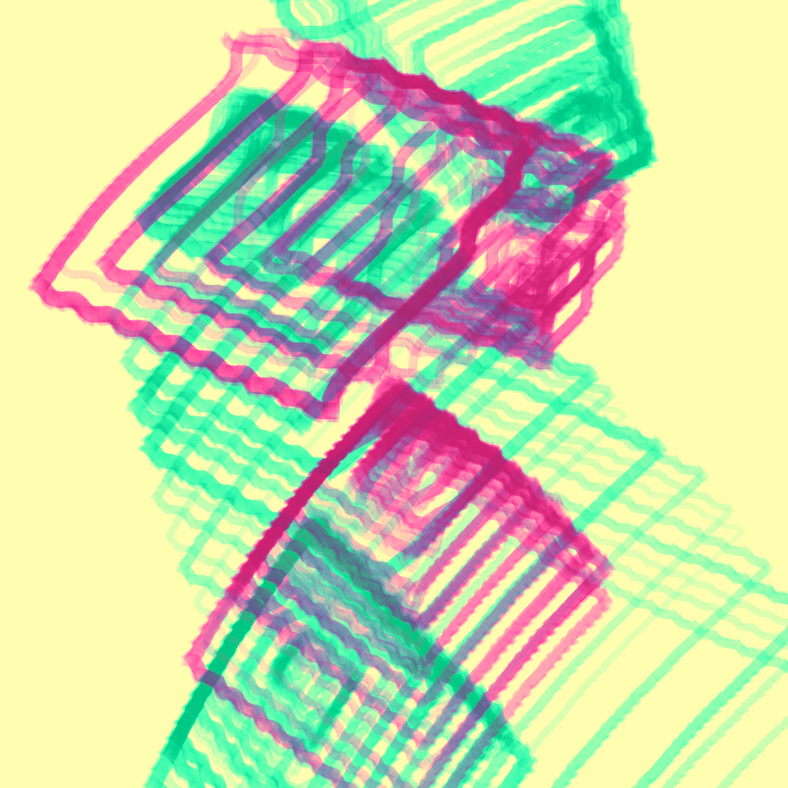
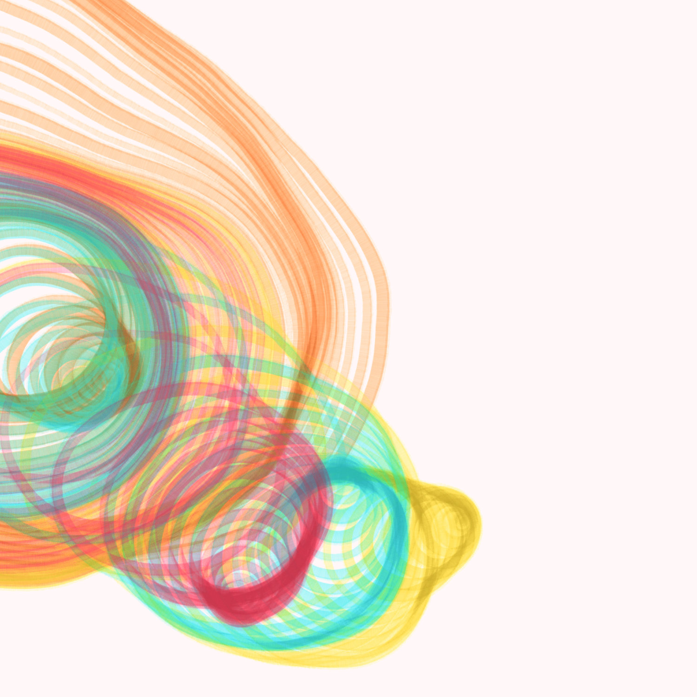
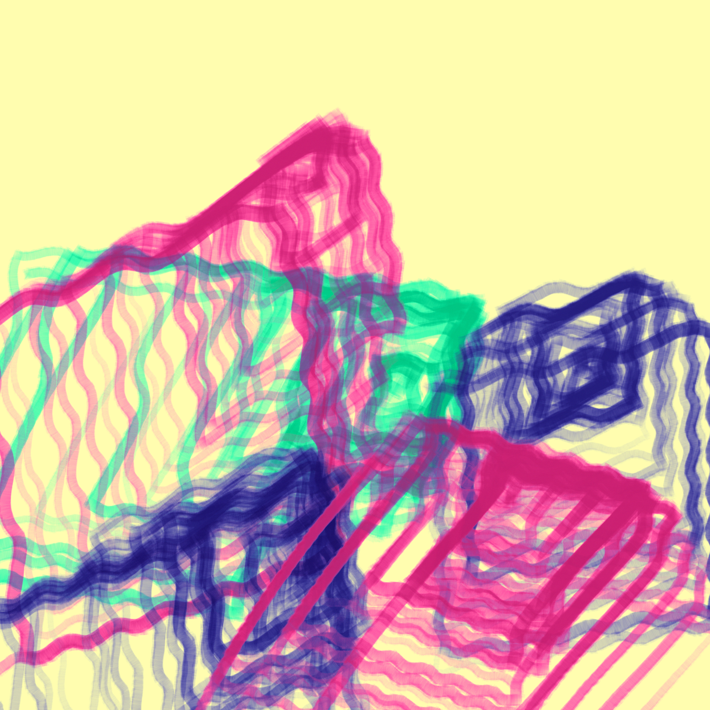
Web Dithering
Graphics in the browser
Post-processing effect using a custom GLSL dithering shader, implemented in the browser using Three.js, inspired by Lucas Pope's Return of the Obra Dinn.
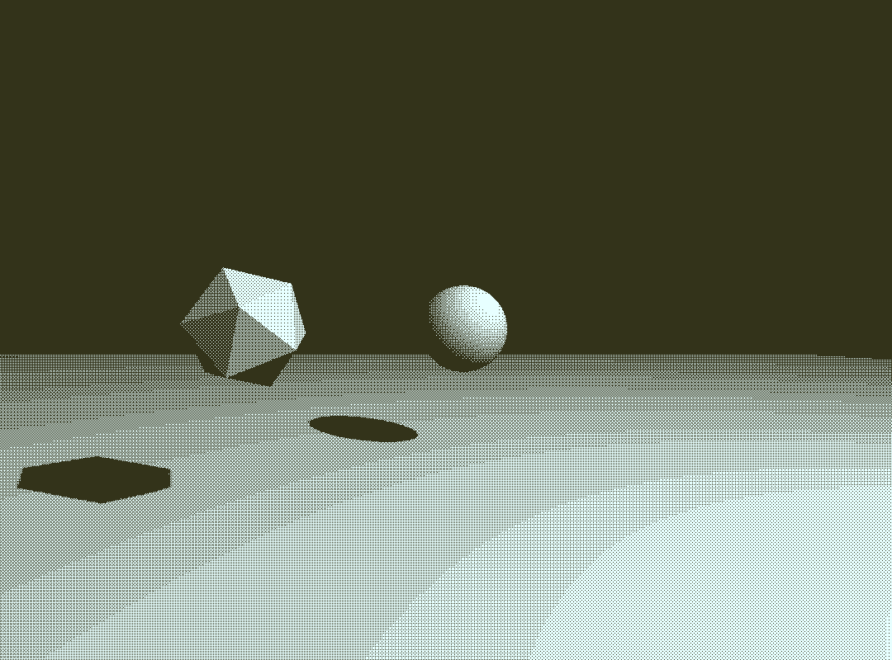
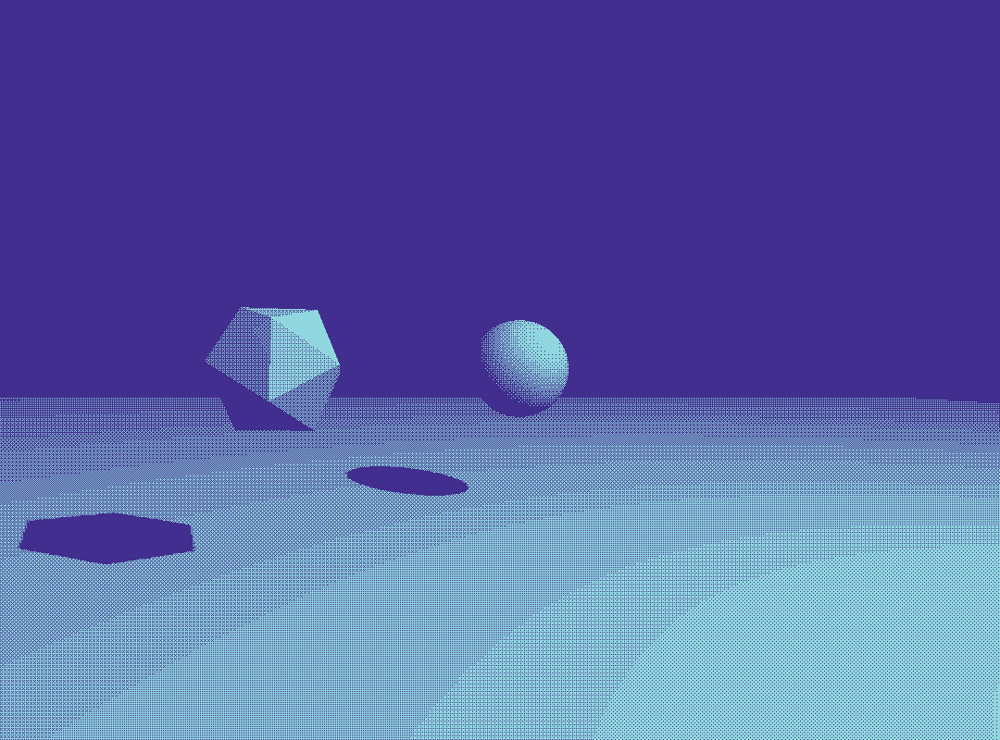
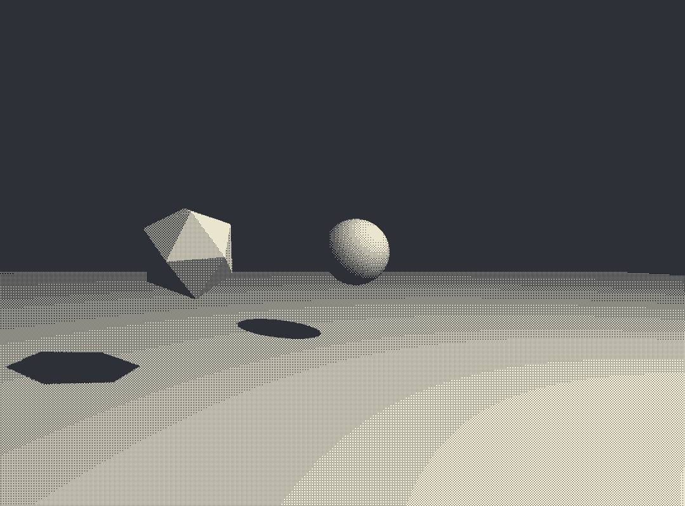
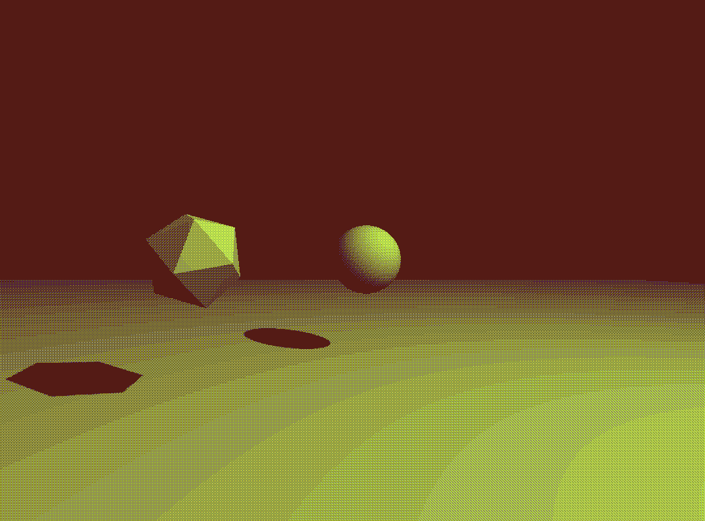
Stout Mobile Augmented Reality Tour of Art
Transforming Art Appreciation with Augmented Reality
I am a co-creator of SMART-Art, an augmented reality framework purpose-built for the Digital Humanities Lab and funded by the Menard Center for the Study of Institutions and Innovation. SMART-Art equips students with a tool to superimpose their research onto a rich collection of canvas and mural pieces on campus. I was a producer and developer, working with my team, department heads, and digital humanities students to release over a dozen AR exhibits on time and on budget.
roles: unity developer, producer, researcher


Skybox Shader
Mathematical Foundations of Computer Graphics Capstone
Handmade Skybox shader in Unity using HLSL.


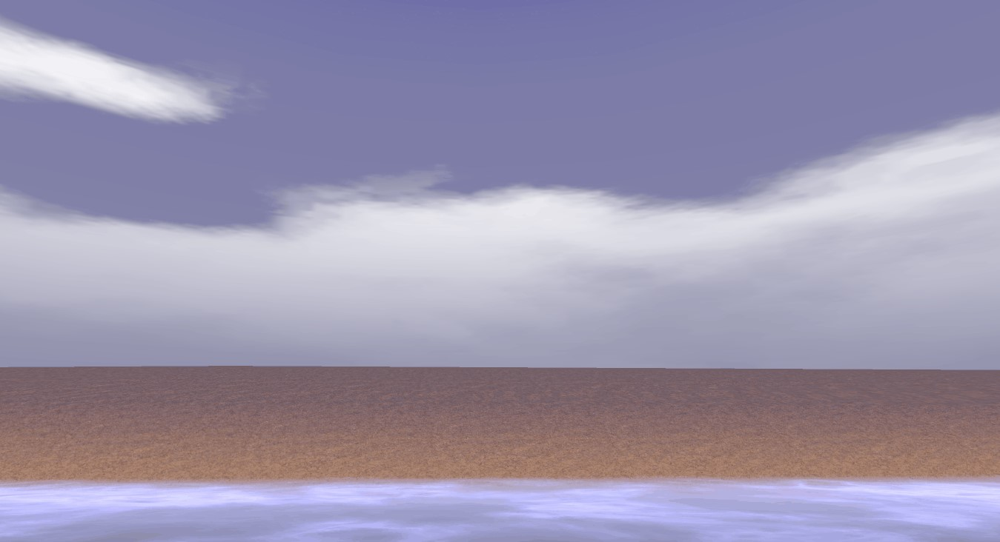
One Teddy Lost
Puddle Jump Studios
Third-person, kid-friendly horror puzzle game. Collaborated with ten peers in a yearlong capstone studio. Showcased at Stout Game Expo 2022.
roles: programmer, qa, game designer, technical artist, and designated note taker


Boids
Programming in Game Engines Capstone
Boids or "bird-oids" written in C#, implemented in Unity based on Craig Reynolds' 1986 paper.

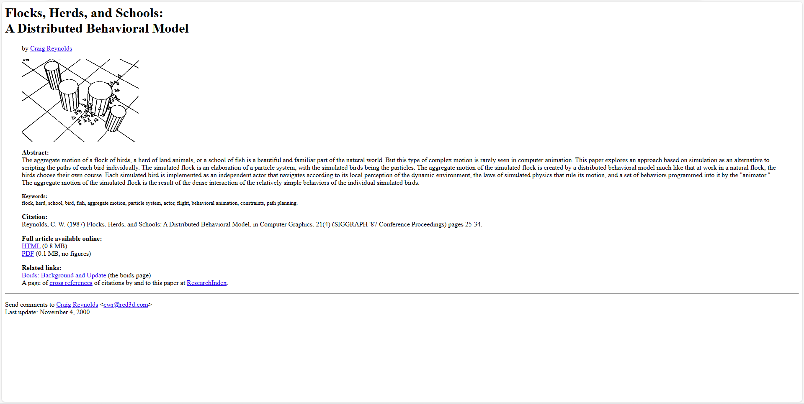
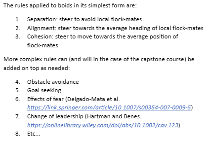
Exhibits at the Madison Children's Museum
I helped make two experiential games for the MCM's arcade cabinets. One is Splashy Trash, a looping game about keeping a pond clean. The second is Minotaur, a maze game based on the myth of Perseus. Both games were made using Phaser.js, then ported to the arcade machines. The map for Minotaur was done in Tiled.
roles: game programmer, level designer


Revolution
A Social Strategy Card Game
Revolution is a game where players control an unstable regime. The objective of the game is to respond to event cards in an way that neutralizes the populace by managing fear, anger, wealth, and action cards. The cards were made in Stout's print lab and the tokens were fabricated in Stout's fab lab using the laser printer.
roles: researcher, game designer, fabricator


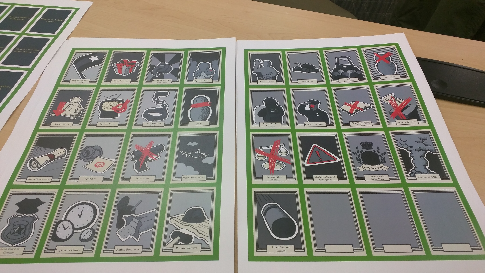
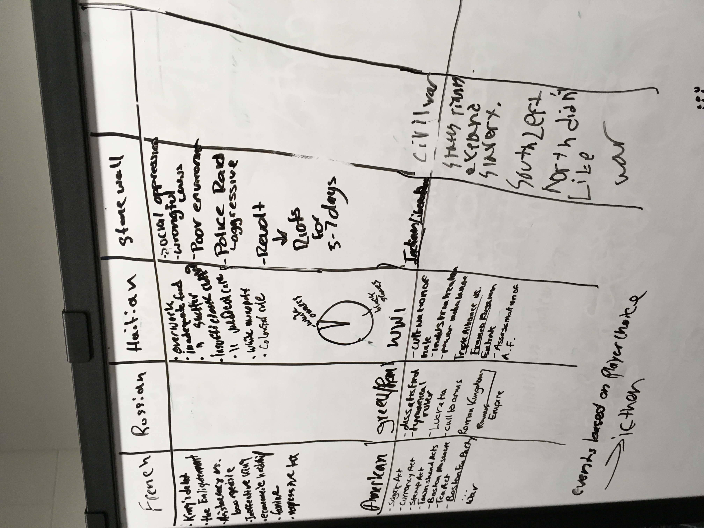